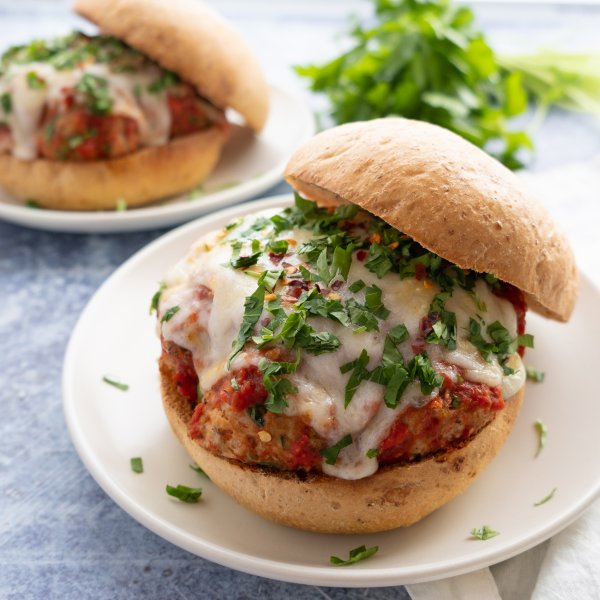

Italian Turkey Meatball Sandwich with Mozzarella & Homemade Marinara

Nutrition (per serving)
699.4 kcalCalories
60.2 gProtein
36.7 gCarbs
35.5 gFat
Full nutrition table
| Calories | 699.4 kcal |
| Total fat | 35.5 g |
| Saturated fat | 13.7 g |
| Trans fat | 0.9 g |
| Cholesterol | 248.9 mg |
| Sodium | 761.6 mg |
| Carbohydrates | 36.7 g |
| Fiber | 8.2 g |
| Sugars | 13.7 g |
| Protein | 60.2 g |
| Potassium | 1111.8 mg |
| Calcium | 489.2 mg |
| Iron | 6.5 mg |
| Vitamin A | 1581.8 IU |
| Vitamin C | 48 mg |
| Vitamin D | 52.3 IU |
Cookware
Ingredients
- 2 (14.5 oz) cansdiced tomatoes
- 2eggs
- 4 clovesgarlic
- 1 ½ lbground turkey
- 1 small bunchItalian (flat-leaf) parsley
- 1 (8 oz) blockmozzarella cheese
- 1 ozParmesan cheese
- ½ mediumred onion
- 4whole grain buns or rolls
- black pepper
- brown sugar
- crushed red pepper
- extra virgin olive oil
- Italian seasoning
- panko bread crumbs
- salt
Steps
- Preheat oven to 400°F.
- Wash and dry parsley. Shave leaves off the stems; discard the stems and mince the leaves. Place half in a large bowl, reserving the rest for garnish.1 small bunch Italian (flat-leaf) parsley
- Peel and mince onion and garlic. Transfer both to the bowl with the parsley.½ medium red onion
2 cloves garlic - Add turkey, eggs, bread crumbs, and spices to the bowl with the parsley and mix with your hands until well combined.1 ½ lb ground turkey
2 eggs
⅓ cup panko bread crumbs
1 tsp Italian seasoning
½ tsp salt
½ tsp black pepper - Coat a large baking dish with a thin layer of oil. Using a tablespoon measure, form the meat mixture into rounded meatballs and place in the dish. Place the dish in the oven and bake until cooked through, 15-18 minutes.1 tsp extra virgin olive oil
- Meanwhile, peel additional garlic and place in a blender.2 cloves garlic
- Drain tomatoes and add to the blender along with sugar and spices. Blend on high until almost smooth.2 (14.5 oz) cans diced tomatoes
2 tsp brown sugar
1 tsp Italian seasoning
½ tsp salt
¼ tsp black pepper - Combine tomato purée and oil in a large pot over medium-low heat; cook, stirring often, until sauce is thick and garlic is cooked through, 5-8 minutes.2 tsp extra virgin olive oil
- Meanwhile, coarsely grate mozzarella; finely grate Parmesan. Transfer both to a medium bowl and toss to combine; set aside.1 (8 oz) block mozzarella cheese
1 oz Parmesan cheese - When the meatballs are done, carefully transfer them to the pot with the tomato sauce; stir to combine.
- Set oven temperature to broil on high and position rack in the upper third of the oven.
- Split the rolls in half and place on a large baking sheet pan, cut-side facing up. Place in the oven and cook until lightly toasted, 1-2 minutes. Remove from the oven.4 whole grain buns or rolls
- Set the tops of the rolls aside, leaving the bottoms on the baking sheet pan. Sprinkle bottom of rolls with half of the cheese. Divide meatballs and sauce between the rolls and top with remaining cheese. Place in the oven and broil to melt the cheese, about 1 minute.
- To serve, sprinkle reserved parsley and crushed red pepper over each sandwich. Close sandwiches and divide between plates. Enjoy!¼ tsp crushed red pepper